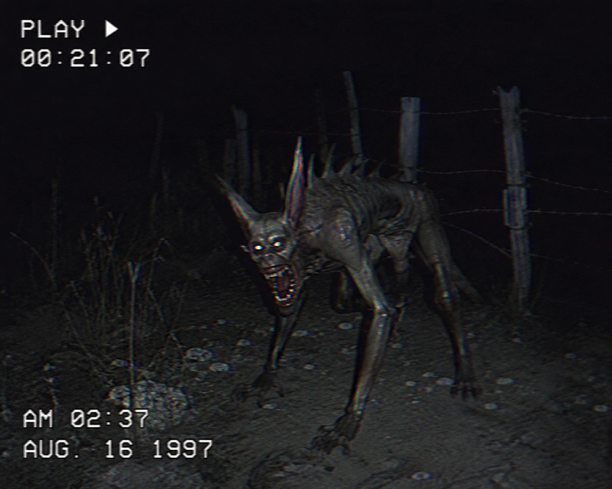

Depredador desconocido.
Los primeros reportes modernos surgieron en Puerto Rico durante la década de 1990.
Criatura pequeña o mediana con piel grisácea, espinas dorsales, ojos rojos y colmillos afilados.
Ataca animales de granja durante la noche, especialmente cabras y aves. Los cadáveres suelen aparecer sin sangre.
Habilidades reportadas :
Ataques rápidos y silenciosos.
Gran velocidad.
Posible comportamiento nocturno altamente inteligente.
ACTIVO